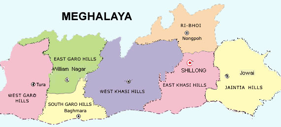

LET'S HAVE A LOOK AT THE TOUR MAP
BACK

WHERE TO VISIT , WHAT TO SEE?
SOME HOT PICKS(#HAVE_TO_VISIT)
- SHILLONG - CAPITAL OF MEGHALAYA
- MAWSYNRAM - THE PLACE WHERE THE HIGHEST RAINFALL OF THE WORLD IS RECORDED
- CHERAPUNJI - CLEAN GREEN SURROUNDING WITH NATURALLY FORMED TREE BRIDGES(DOUBLE DECKER LIVING ROOT BRIDGE)
- TURA - EXPLORED TOWN OF NATURAL BEAUTY
- JOWAI - IN THE JAINTIA HILLS FAMOUS FOR THE SCENIC AND BREATHTAKING VIEWS
- ELEPHANT FALLS - NAMED AFTER AN ELEPHANT LIKE STONE AT THE TOP OF THE WATERFALLS, IT IS A PARADISE FOR WATERFALL LOVERS
- NONKALIKAI WATERFALLS - FOURTH HIGHEST WATERFALL IN THE WORLD
- MAWSMAI CAVE - HOME TO SOME AMAZING AND MYSTERIOUS CAVE SYSTEMS, A PART OF THE EAST KHASI HILLS
- MAWLYNNONG - SMALL VILLAGE IN THE EAST KHASI HILLS, KNOWN AS GOD'S OWN GARDEN
- UMIAM LAKE - MESMERIZING MAN MADE RESERVIOUR.THIS WAS ACTUALLY A DAM CONSTRUCTED TO GENERATE HYDROELECTRICITY
- DAWKI - A SMALL BORDER TOWN IN THE JAINTIA HILLS , DAWKI AND RIVER UMNGOT IS A MUST VISIT FOR MEGHALAYA TOURISM
- KYLLANG ROCK - IS ACTUALLY A GIANT PIECE OF GRANITE ROCK BEAUTIFUL IN ITS SHAPE
- NOHSNGITHIANG FALLS - AT A DISTANCE OF 4 KM FROM CHERAPUNJI THIS PLACE HAS ONE OF THE TALLEST WATERFALLS IN INDIA AND MAJOR TOURIST SPOT
SOME_OTHER_ATTRACTIONS
- NONGPOH - FAVOURITE STOPOVER DESTINATION FOR TOURISTS
- WILLIAMNAGAR - LARGE PLAINS OF RIVER SIMSANG
- BAGHMARA - RICH IN FLORA AND FAUNA
- BALPAKRAM NATIONAL PARK -
- JAINTIA HILLS - SACRED PRISTINE PATCH OF HILLROCKS AND FORESTS
- GARO HILLS - FAMOUS FOR THE GARO TRIBES WHO BELIEVE IN NATURE AND FOLKLORE